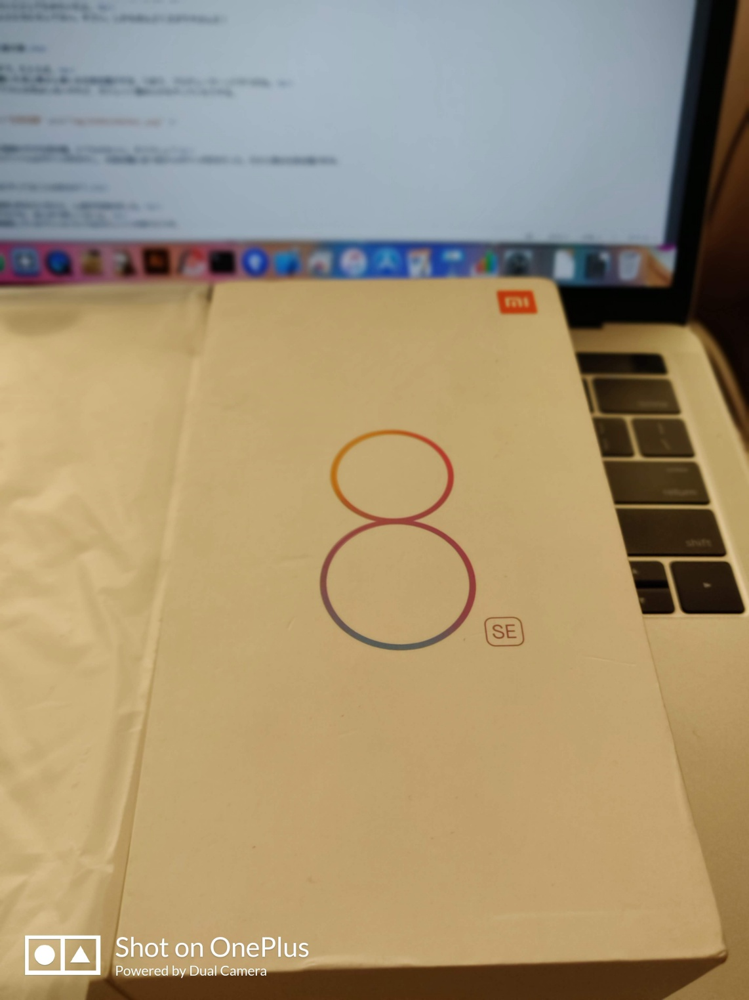
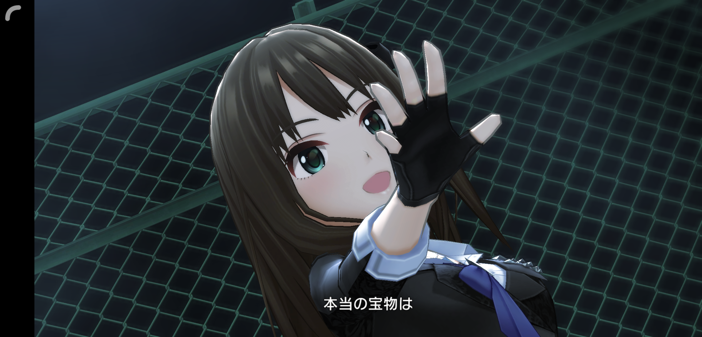
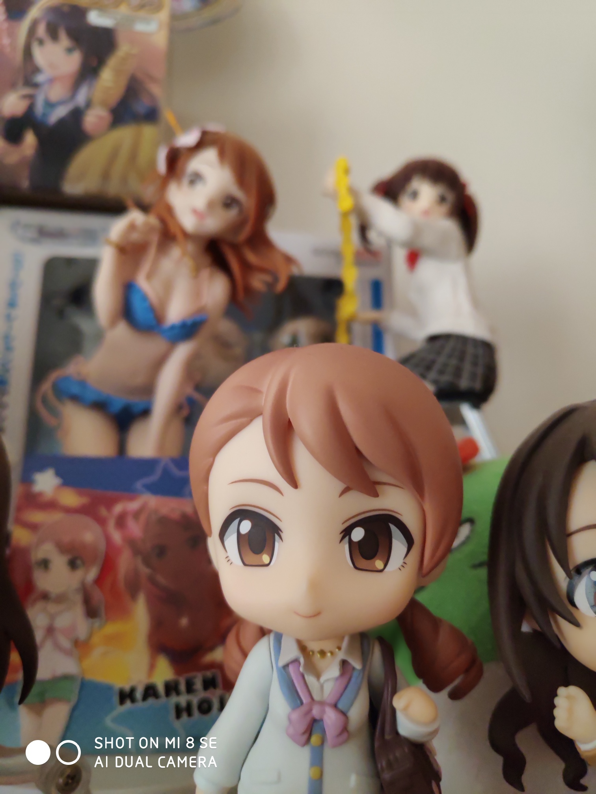
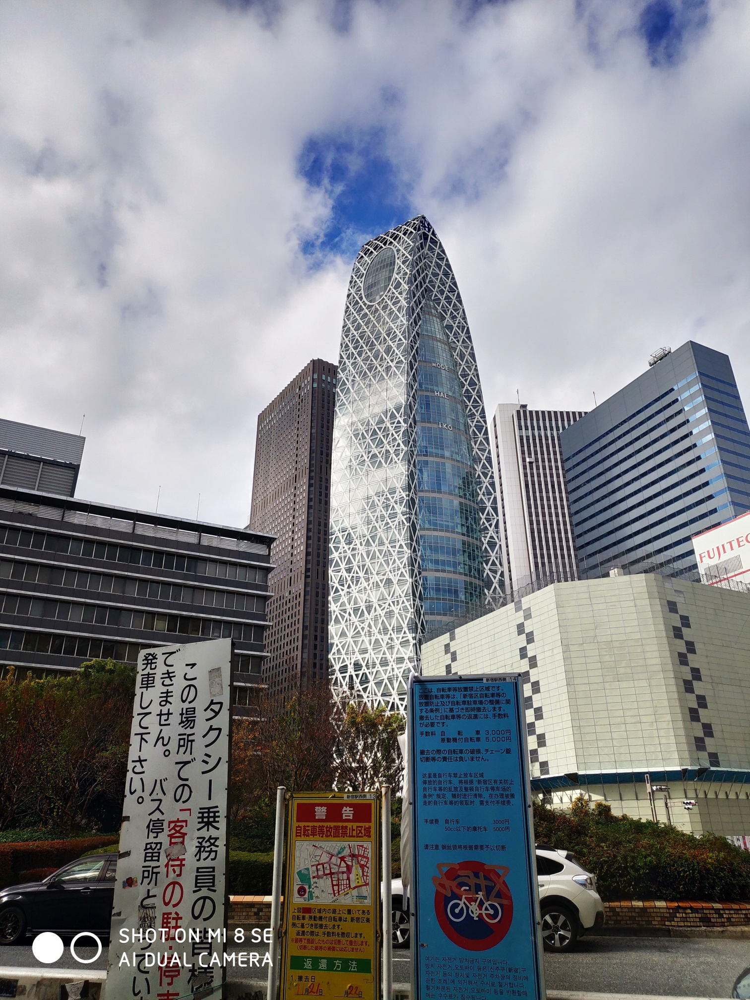

別に納豆臭くはない。
別に納豆臭くはない。
最近（2018/11/23）、あるブツを購入した。

珍しいSoCを持っているスマートフォンである。
そのSoCの名もSnapDragon710。
別に納豆臭くはない。
悪くはないが、悪い。と言ったところか。
ガジェットのページの項の通り、僕はOnePlus6、XZ1等々持っているのだけど、その中でも癖が強いという印象を受ける。
でも、これを27800円で手に入れたので色々試してみた。
（意外とつまらなかったので）そのうち手放す予定。某社では買取マスタが24000円なので約3000円無駄にしたけど仕方がない。
なお顔認証と指紋認証が両立できる。中華スマートフォンはここがいい。
いつもの。ぶっちゃけ書くと、悪くない。すごく悪くない。

SDM820端末より動く印象を受ける。その端末がキャリアスマートフォンというのもあるのだが…。
なおGooglePlayが載っていないスマートフォンなのでadb経由で入れた。
そういう面では面倒くさいだろう。
悪くない…が悪くない。つまるとこ悪い。
とはいえ普通に撮れる。


写真のセンスが無いのがバレてしまうが、まあこんなもんだろう。
ポートレートもなかなかいいもの。
あえて載せないが飯はメシマズ写真である。お察し。
というわけで簡単なレビューを書いてみた。買って損はないけど、損がある端末だった。